Broadcast features in the HUD
261019. Seven features from the feature list: tale of the tape (1), vitals strip (2), knock-out credit, feed and voice (3), tactician (7), pack targeting (8), get-up rule (9), stamina and hype (10). Captures: Unity Game view at 1080 x 2520 (9:16 column), six-way free-for-all unless noted. Numbered pins mark what changed.
1. Settings split in two tabs: Settings and Connect
The Settings tab already ran past the bottom of the sheet: "Reset all settings" lay on top of the Claude and Azure chips. Network features moved to a new Connect tab, and the match options gained the five targeting modes and four feature switches.
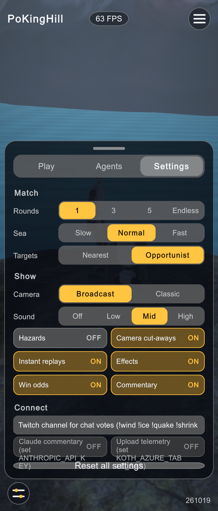
1- "Reset all settings" drawn over the Claude / Azure chips: the sheet overflowed.
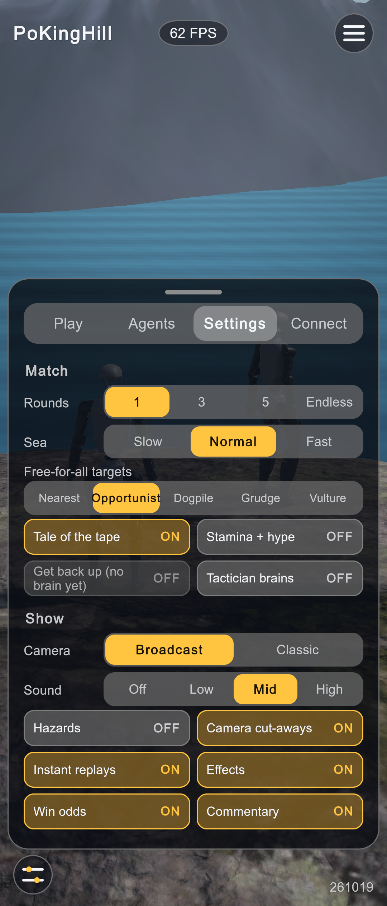
123- Free-for-all targets: Nearest, Opportunist, Dogpile, Grudge, Vulture.
- Tale of the tape, Stamina + hype, Get back up (locked until a get-up brain exists), Tactician (experimental).
- New Connect tab.
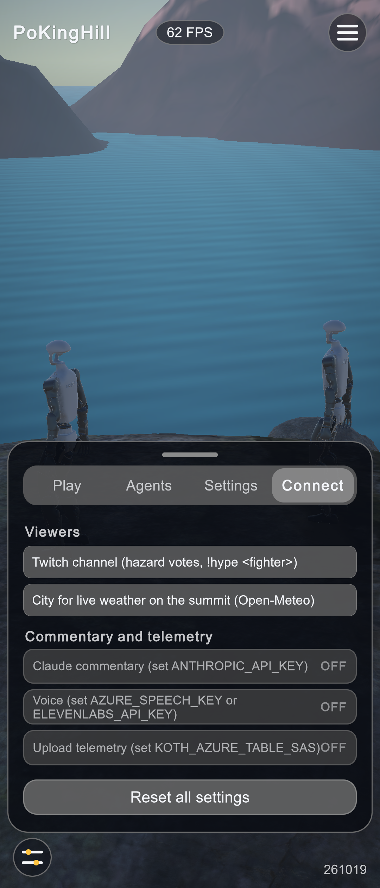
123- Live-weather city (Open-Meteo, no key) under the Twitch field (chat now also takes
!hype <fighter>). - Voice: Azure Speech or ElevenLabs; each chip names the key it waits for.
- Reset has its full height again.
2. Tale of the tape before the first round
New match state Intro: the fighters stand passively while a Cinemachine spline dolly cranes up from the sea, then an orbit visits each one (from outside the ring, so nobody stands in front) with a card read from the compiled model and the ladder. "Skip intro" starts the round; the round itself starts from a fresh placement, as before.
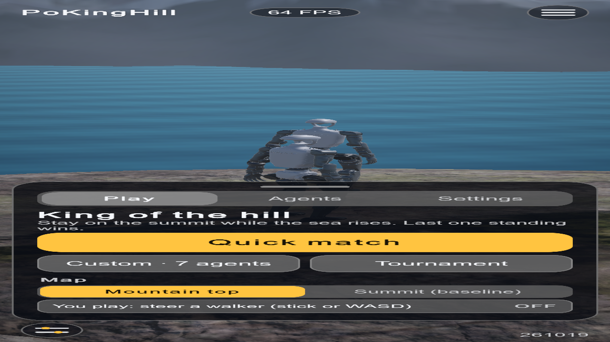
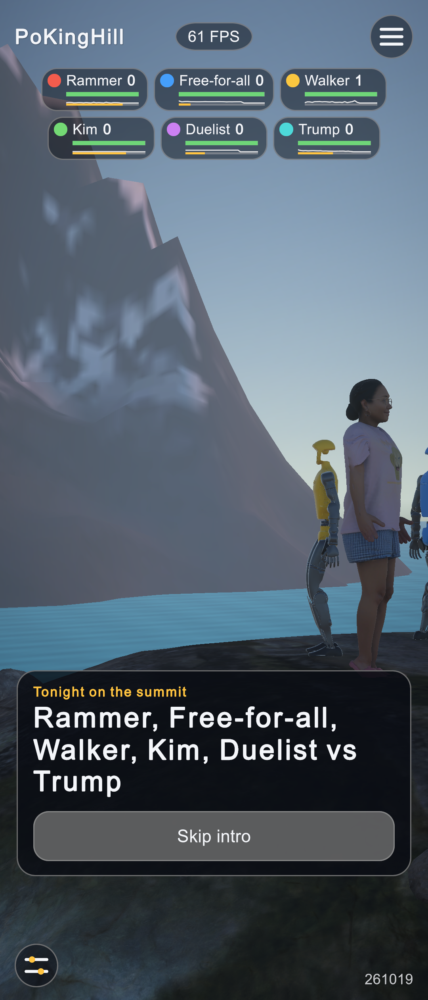
12- "Tonight on the summit": the field.
- Crane shot along
Intro crane path(Splines).
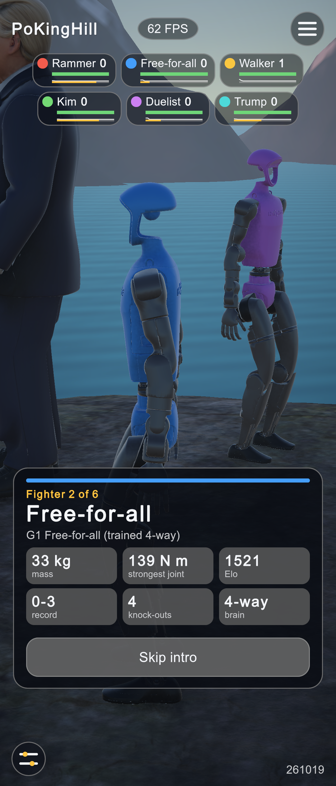
123- Seat colour stripe and "Fighter n of 6".
- Mass and strongest joint from mjModel; Elo, record and knock-outs from the ladder; brain kind from the input size.
- Skip intro.
3. Badges carry vitals, tactics and status
Each badge has a strip drawn with Painter2D: balance (capture point against the planted feet, a step's reach counted as full), the last 3 s of joint strain as a sparkline, and stamina in gold. A tag shows DOWN n.n (get-up count), EDGE (capture point past the rim while heading out), HYPE, or the fighter's tactic (regroup, flank, lurk). Tapping a badge cheers that fighter on (adrenaline, with a cooldown).
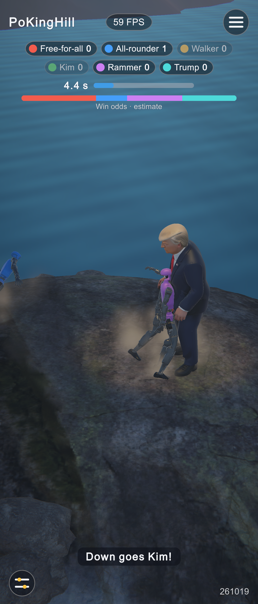
1- Name and wins only.
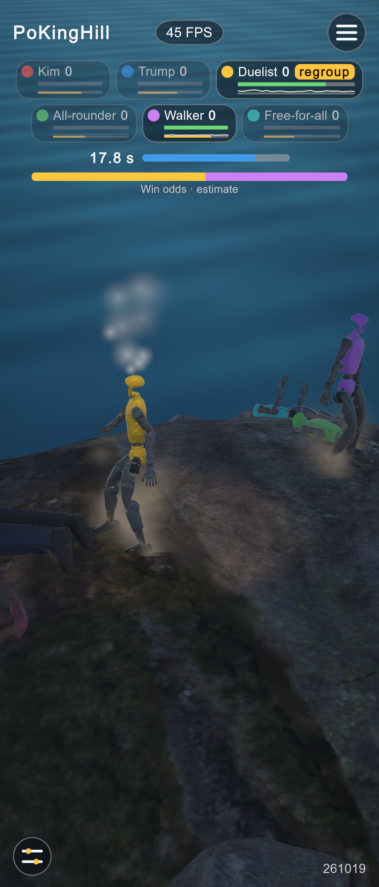
123- Tactic tag: the Duelist's planner chose "regroup".
- Vitals: balance bar, strain sparkline, stamina.
- Steam off a worn-out fighter (stamina < 0.4).
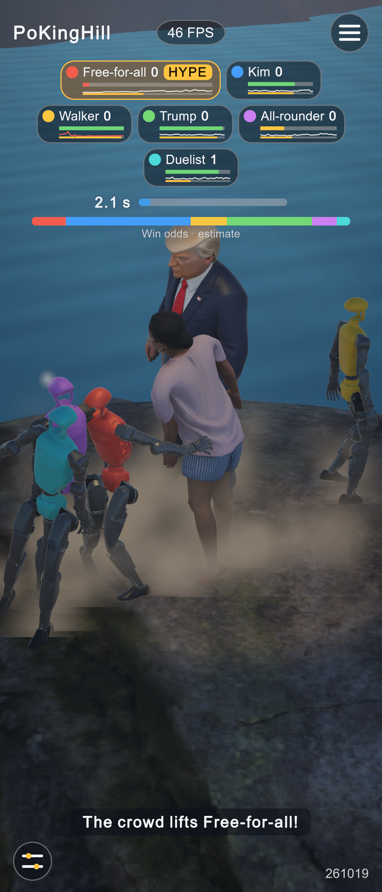
12- HYPE: adrenaline, servo stiffness +15 % for 4 s and a quarter of the stamina back (a badge tap or chat
!hype, 8 s cooldown, hidden once a fighter is out). - The commentator picks it up.
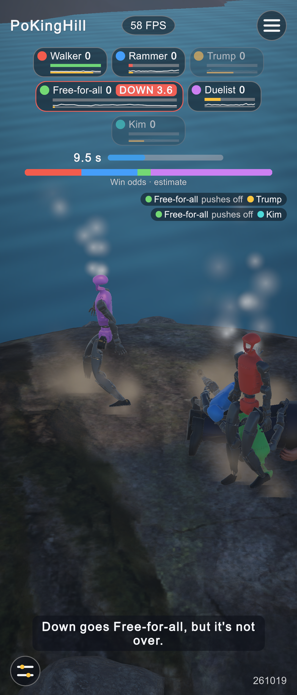
12- DOWN 3.6: the Free-for-all fell on the plateau; its get-up brain has the rest of the 5 s count to stand it up again, or it is out.
- "Down goes Free-for-all, but it's not over."
4. Who pushed whom: knock-out feed and results
ContactLedger assigns every contact impulse between two fighters to the one moving faster toward the other; a knock-out goes to the largest recent push (3 s), the runner-up gets the assist. The feed keeps the last four, the commentator names them, and the ladder now keeps record, knock-outs and assists. On the results sheet KO (knock-outs + assists) replaces the distance walked.
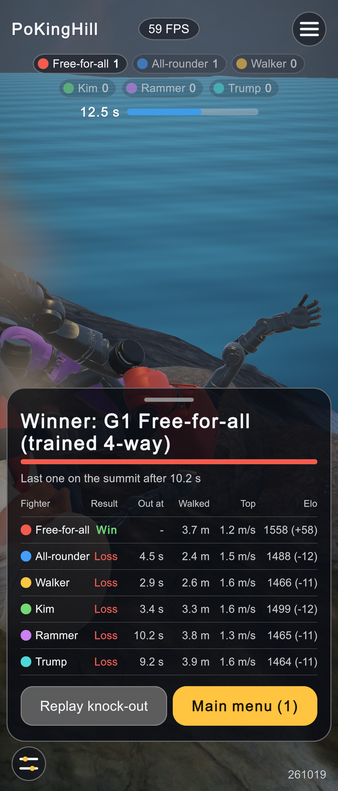
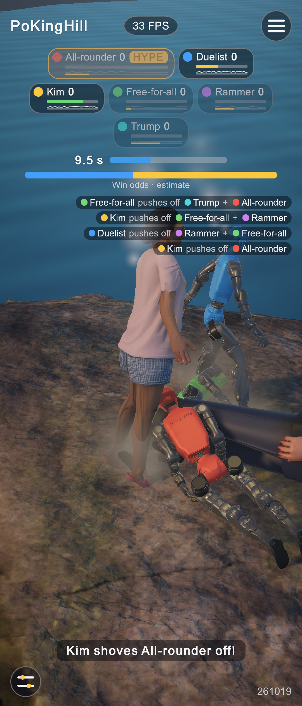
12- "Free-for-all pushes off Trump + All-rounder": credit and assist.
- The caption line names the pusher.
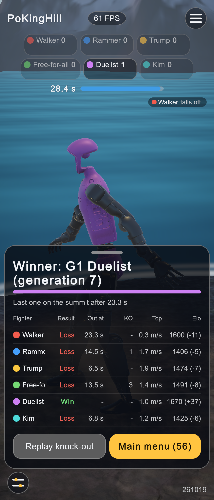
12- KO column (knock-outs + assists) where Walked was: the Free-for-all pushed off three.
- "Walker falls off": nobody had pushed it in the last 3 s.
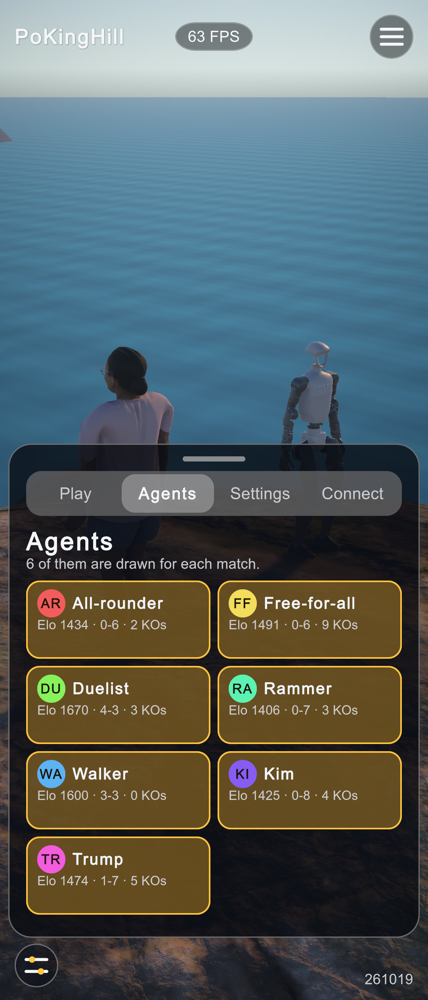
1- Each agent card: Elo, win-loss record and knock-outs from the ladder (it used to show rounds and this session's wins).
5. Pack targeting: Vulture
Vulture holds a spot out of the fight (Tactic.Lurk, 0.6 m from the centre) while two others push each other, then goes for whoever is least balanced or nearest the rim. Dogpile sends everyone at the fighter nearest the centre, Grudge at whoever pushed you last.
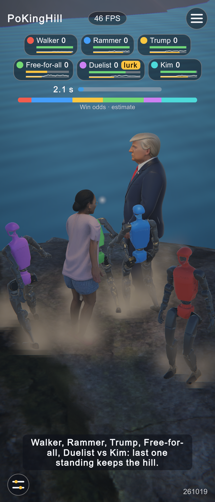
12- "lurk": the Duelist holds back while others push each other.
- Balance bars green while walking (a step's reach counts as full balance).
6. Measured
| What | Result |
|---|---|
| EditMode tests | 40 / 40 (new: MlpNet vs Sentis on four brains, ladder record and credits, capture-point geometry, voice PCM, weather codes) |
| PlayMode tests | 3 / 3 (new: the intro leads into the first round with brains armed) |
| Physics tick, six-way, editor | 1.0-1.15 ms with or without the new sensors (no measurable cost) |
| Get-up gate (200 drops) | Unity 99.5 % up within the 5 s count, median 1.47 s (1.38 / 1.60); CPU MuJoCo 100 %, 1.52 s (1.40 / 1.60) |
| Duel with the get-up rule (200) | Unity 99 % decided, median 7.98 s; Python 99.5 %, 8.40 s (same relationship as the plain-rule gate) |
| Tactician A/B (200 duels) | loses to plain Press in every variant (best 76-120); kept as an experimental show option |